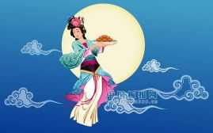
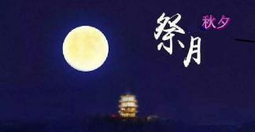
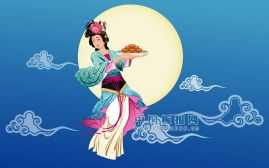
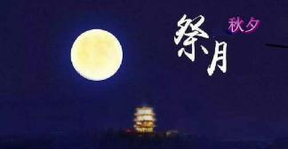

中秋节是上古天象崇拜——敬月习俗的遗痕。在二十四节气“秋分”时节，是古老的“祭月节”，中秋节则是由传统的“祭月”而来。在传统文化中，月亮和太阳一样，这两个交替出现的天体成了先民崇拜的对象。中秋节庆源自古人对月亮的祭祀，是中华民族祭月习俗的遗存和衍生。祭月，在我国是一种十分古老的习俗，实际上是古时代我国一些地方古人对“月神”的一种崇拜活动。据考证，最初“祭月节”是定在干支历二十四节气“秋分”这天，不过由于历史发展，后来历法融合，使用阴历（夏历），所以将“祭月节”由干支历二十四节气“秋分”调至夏历（农历）八月十五。中秋节是秋季时令习俗的综合，其所包含的节俗因素，大都有古老的渊源。
2008年开始中国大陆将中秋节列为法定节假日，如当天与周六周日重合，则在下周一补休一天。
在台湾，中秋节当天放假一天，若与周六、日重叠则不另外补假，但若与周休假期仅相隔一工作日者，该工作日则调为假期，并择另一星期六补班补课。
香港的中秋节法定节假日定在农历八月十六日（中秋节翌日）。如果碰上星期日，则在星期一补一天假；如果碰上星期六则没有补假。
节日别称
根据中国的历法，农历八月在秋季中间，为秋季的第二个月，称为“仲秋”，而八月十五又在“仲秋”之中，所以称“中秋”。
中秋节有许多别称：古时有秋分夕月（拜月）的活动，故称“月夕”或“祭月节”。因节期在八月十五，所以称“八月节”、“八月半”；因中秋节的主要活动都是围绕“月”进行的，所以又俗称“月节”；中秋节月亮圆满，象征团圆，因而又叫“团圆节”。中秋节月亮圆满，家人团聚，出嫁的女儿回家团圆，因此又称“团圆节”、“女儿节”。在广府地区，中秋节俗称“月光诞”。仲秋时节各种瓜果成熟上市，因称“果子节”。侗族称为“南瓜节”，仫佬族称为“后生节”等。
中秋节还被称为“端正月”。关于“团圆节”的记载最早见于明代文学作品。《西湖游览志余》中说：“八月十五谓中秋，民间以月饼相送，取团圆之意。”《帝京景物略》中也说：“八月十五祭月，其饼必圆，分瓜必牙错，瓣刻如莲花。……其有妇归宁者，是日必返夫家，曰团圆节也。”
风俗习惯
祭月，在我国是一种十分古老的习俗，实际上是古人对“月神”的一种崇拜活动。在古代有“秋暮夕月”的习俗。夕月，即拜祭月神。自古以来，在广东部分地区，人们都有在中秋晚上拜祭月神（拜月娘、拜月光）的习俗。拜月，设大香案，摆上月饼、西瓜、苹果、红枣、李子、葡萄等祭品。在月下，将“月神”牌位放在月亮的那个方向，红烛高燃，全家人依次拜祭月亮，祈求福佑。祭月赏月，托月追思，表达了人们的美好祝愿。祭月作为中秋节重要的祭礼之一，从古代延续至今，逐渐演化为民间的赏月、颂月活动，同时也成为现代人渴望团聚、寄托对生活美好愿望的主要形态。
中秋活动
 



中秋之夜，有燃灯以助月色的风俗。如今湖广一带仍有用瓦片叠塔于塔上燃灯的节俗。江南一带则有制灯船的节俗。近代中秋燃灯之俗更盛。今人周云锦、何湘妃《闲情试说时节事》一文说：“广东张灯最盛，各家于节前十几天，就用竹条扎灯笼。做果品、鸟兽、鱼虫形及‘庆贺中秋’等字样，上糊色纸绘各种颜色。中秋夜灯内燃烛用绳系于竹竿上，高竖于瓦檐或露台上，或用小灯砌成字形或种种形状，挂于家屋高处，俗称‘树中秋’或‘竖中秋’。富贵之家所悬之灯，高可数丈，家人聚于灯下欢饮为乐，平常百姓则竖一旗杆，灯笼两个，也自取其乐。满城灯火不啻琉璃世界。”中秋燃灯之俗其规模似乎仅次于元宵灯节。
赏月的风俗来源于祭月，严肃的祭祀变成了轻松的欢娱。据说此夜月球距地球最近，月亮最大最圆最亮，所以从古至今都有饮宴赏月的习俗；回娘家的媳妇是日必返夫家，以寓圆满、吉庆之意。民间中秋赏月活动的文字记载出现在魏晋时期，但未成习。到了唐代，中秋赏月、玩月颇为盛行，许多诗人的名篇中都有咏月的诗句。
所谓“追月”，即是过了农历八月十五，兴犹未尽，于是次日的晚上，不少人又邀约亲朋好友，继续赏月，名为“追月”。据清人陈子厚《岭南杂事钞》序云：“粤中好事者，于八月十六夜，集亲朋治酒肴赏月，谓之追月。”
在古代，浙江一带除中秋赏月外，观潮可谓是又一中秋盛事。中秋观潮的风俗由来已久，早在汉代枚乘的《七发》赋中就有了相当详尽的记述。汉以后，中秋观潮之风更盛。明朱廷焕《增补武林旧事》和宋吴自牧《梦粱录》也有观潮记载。
神话传说
嫦娥奔月
“嫦娥奔月”神话源自古人对星辰的崇拜，嫦娥奔月故事最早出现在《归藏》。后来民间把故事进一步发挥，衍化成多个故事版本。嫦娥登上了月宫，据西汉《淮南子》中说，是因为她偷吃了她丈夫羿从西王母那里要来的不死药，就飞进月宫，变成了捣药的蟾蜍。
吴刚折桂
吴刚登上月宫折桂，据唐代小说《酉阳杂俎》中说，是因为西何人吴刚修仙犯了错误，才罚他去伐月中的桂树。这桂树随砍随长，永远也砍不断。 李白在《赠崔司户文昆季》一诗中写道：“欲斫月中桂，持为寒者薪。”
玉兔捣药
兔子登上月宫捣药，最早见于屈原的《天问》“厥利维何，而顾、菟在腹？”。意思是说，顾、菟在月亮的肚子里，对月亮有什么好处呢？那兔子又是如何登上月宫的呢？顾就是蟾蜍，菟就是白兔。晋代傅玄的《拟天问》也说：“月中何有，白兔捣药。”据闻一多先生考证，这“白兔捣药”是由“蟾蜍捣药”变来的。
嫦娥身边有只玉兔。据说嫦娥身体变轻，开始升空时，惶恐中抱起了一直喂养的白兔。白兔便随她一起上了月亮。玉兔在月宫有一只捣药杵，夜晚在药臼中捣制长生不老的灵药。这个神话传到日本后，变成了玉兔在捣年糕。
玄宗故事
相传唐玄宗与申天师及道士鸿都中秋望月，突然玄宗兴起游月宫之念，于是天师作法，三人一起步上青云，漫游月宫。但宫前有守卫森严，无法进入，只能在外俯瞰长安皇城。在此之际，忽闻仙声阵阵，唐玄宗素来熟通音律，于是默记心中。这正是：“此曲只应天上有，人间能得几回闻！”日后玄宗回忆月宫仙娥的音乐歌声，自己谱曲编舞，创作了历史上有名的《霓裳羽衣曲》。
月饼起义
中秋节吃月饼相传始于元代。据说，当时，中原广大人民不堪忍受元朝统治阶级的残酷统治，纷纷起义抗元。朱元璋联合各路反抗力量准备起义。但朝庭官兵搜查的十分严密，传递消息十分困难。军师刘伯温便想出一计策，命令属下把藏有“八月十五夜起义”的纸条藏入饼子里面，再派人分头传送到各地起义军中，通知他们在八月十五日晚上起义响应。到了起义的那天，各路义军一齐响应。
很快，徐达就攻下元大都，起义成功了。消息传来，朱元璋高兴得连忙传下口谕，在即将来临的中秋节，让全体将士与民同乐，并将当年起兵时以秘密传递信息的“月饼”，作为节令糕点赏赐群臣。此后，“月饼”制作越发精细，品种更多。之后中秋节吃月饼的习俗便在民间流传开来。